START HERE
Learning intentions
Build a coin gate in Scratch - a guide for complete beginners.
What are we making?
The Scratch cat will be a gatekeeper. You type how many coins a player has. The cat uses a rule to choose a message: Gate open! or Collect more coins.
By the end, I will be able to...
select a sprite, join blocks and run a short program;
use ask to collect input from a player;
make a variable and store an answer in it;
use a comparison and if/else to choose a message;
test a rule using different inputs, especially 9 and 10;
use AND to require both enough coins and a key.
How to use this guide
Open Scratch in one browser tab and keep this guide in another tab. Read one numbered step, do it in Scratch, then return to the guide. Use your notebook or the printed pages to record test results.
| Pages | What you will do |
|---|---|
| 2-6 | Learn the screen, blocks, input and variables. |
| 7-8 | Build and test the first coin gate. |
| 9-11 | Add a key and use AND. |
| 12-14 | Optional: OR, NOT, and paper search/sort tasks. |
Start small: Get each short program working before adding the next part. The optional tasks can wait until your main gate works.
FIRST STEPS
Meet the Scratch screen
A sprite is a character or object that you can give instructions to.
Open a web browser. Type scratch.mit.edu/projects/editor/ in its address bar and press Enter. You can work without signing in.
Keep the cat. Click its small picture below the Stage, then click the Code tab near the top left. These instructions use English labels.
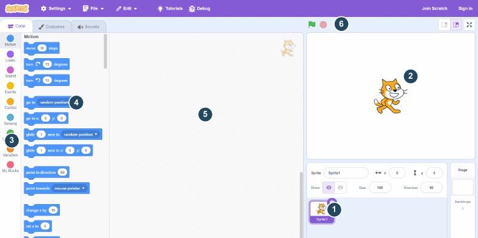
1. Sprite: The cat is our character. Its small picture selects its code.
2. Stage: This is where you see the cat and its messages.
3. Categories: Click a name such as Events or Looks to choose a block group.
4. Blocks: Choose instructions from this list.
5. Code area: Drag blocks here and join them to make your program.
6. Green flag: Click it to start code that begins with the flag block.
Find them: Point to the cat, Stage, Code area and green flag before going to the next page.
BLOCKS AND SEQUENCE
Make your first program
A program is a set of instructions. In Scratch, instructions are blocks.
Click Events in the category list. Point at the yellow when green flag clicked block. Hold the mouse button, move the block into the Code area, then release. This is called dragging.
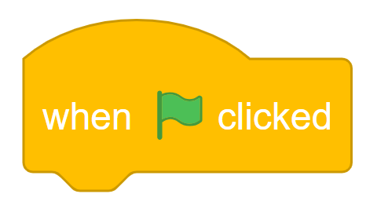
Click Looks. Drag the purple say Hello! for 2 seconds block under the yellow block. Release when it snaps into place. The blocks must touch.
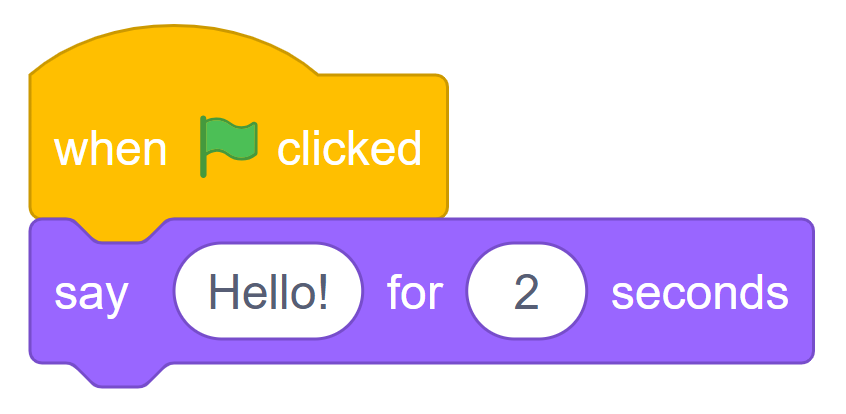
Click the green flag above the Stage. The cat should show Hello! for 2 seconds. Click the flag again to run it again.
Why does it work?
The yellow block tells Scratch when to start. Scratch then follows the joined blocks from top to bottom. Their order is called a sequence.
The cat's message is output: information the program gives back to the player.
Click the white Hello! box in the purple block. Replace the text with I am the gatekeeper!. Click the flag again.
If nothing happens: Check that the cat is selected, that the two blocks are joined, and that you clicked the flag above the Stage.
Save a copy: Open File > Save to your computer. Rename the downloaded file Y7_Week5_Gate_YourName.sb3. Save again after later changes.
INPUT
Ask the player a question
Input is information that the player gives to a program.
Drag the purple say block away from the yellow block to detach it. Drag it back into the block list on the left to remove it. Keep the yellow flag block.
Click Sensing (light blue). Drag ask ... and wait under the flag block. Click its white question box and type How many coins?
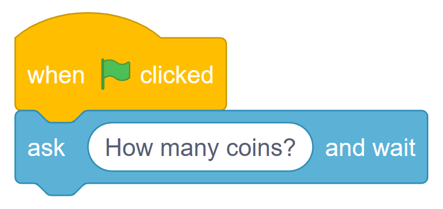
Click the green flag. A question and an answer box appear on the Stage. Click the answer box, type 9, then press Enter or click its tick.
Where does the reply go?
Scratch puts the latest reply into the light-blue oval block called answer. Find this block in Sensing.
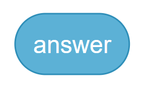
When you type 9, answer holds 9. Run the question again and type 10: answer now holds 10. The new reply replaces the previous reply.
| Try this | What should happen |
|---|---|
| Run and type 9 | The question waits until you submit your reply. |
| Run and type 10 | The most recent answer becomes 10. |
Next: We need to keep the coin number for our gate rule. We will store it in a variable called coins.
VARIABLES
What is a variable?
A variable is a named place in a program that stores one value at a time.
Think of a box with a label. Our label will be coins. Its value might be 9 now and 10 later. The name stays the same; the value can change.
| Variable name | Value now | After storing a new value |
|---|---|---|
| coins | 9 | 10 |
Make the coins variable
Click Variables (orange). Click Make a Variable. A New Variable window opens.
Click the name box and type coins. Choose For all sprites, then click OK. This makes the variable available throughout this project.
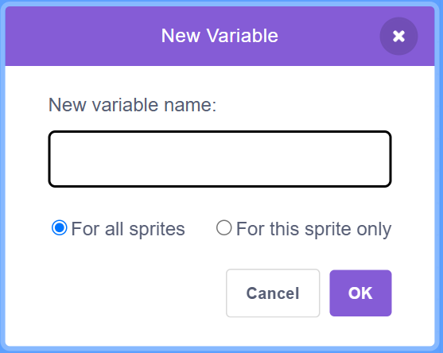
In Variables, tick the small box beside coins. Its value appears on the Stage. It starts at 0.
Name or value? In coins = 9, coins is the variable name and 9 is the value. The next page shows how to put the player's answer into it.
BUILD THE GATE
Store the player's answer
Use set to put a value into the coins variable.
Keep your flag and ask blocks from page 4. In Variables, drag set ... to ... below the ask block. Click its small arrow and choose coins.
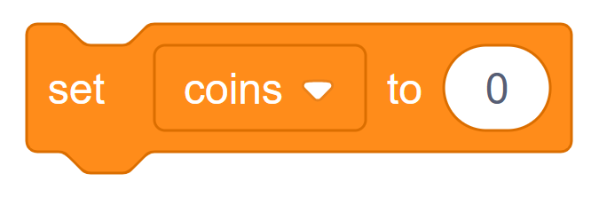
In Sensing, drag the oval answer block into the white 0 in set coins. Do not type the word answer. It must be the light-blue block.
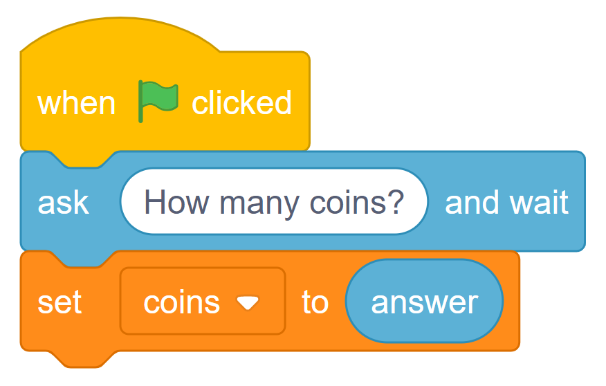
Read it from top to bottom: start, ask, then store the reply in coins. The oval answer gives a value; set coins stores that value.
Click the green flag. Type 9 in the answer box and press Enter. Look at coins on the Stage. Click the flag again and try 10.
| Type | coins should show | What did yours show? |
|---|---|---|
| 9 | 9 | |
| 10 | 10 |
Check: All three blocks must touch. The orange set block must contain the light-blue oval answer block.
Save: File > Save to your computer. Use Y7_Week5_Gate_YourName.sb3.
BUILD THE GATE
Make the coin gate
The gate opens when the player has at least 10 coins.
A condition is a test with a true or false result. The > symbol means greater than. An if/else block chooses which instructions to run.
Use whole-number coin counts: 0, 1, 2, 3, ... . For these inputs, coins > 9 means 10 coins or more.
Find the blocks: Operators (green) - Control (orange) - Looks (purple).
In Operators, drag out >. Drag the orange oval coins into its left input. Type 9 in the right input.
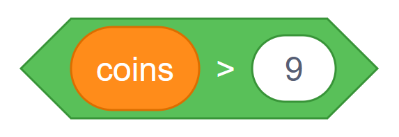
From Control, use if ... then ... else (the block with two spaces inside). Attach it below set coins. Put the green comparison into its hexagonal hole.
From Looks, add a say ... for 2 seconds block inside each space. Type the messages exactly as shown.
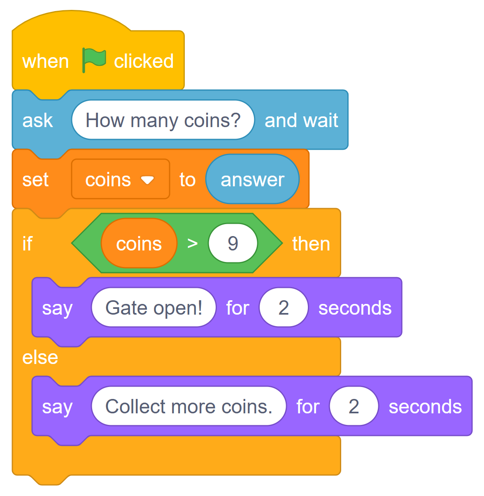
Check the positions
Test is true (10 or more):
The top branch runs:
Gate open!
Test is false (0 to 9):
The else branch runs:
Collect more coins.
Scratch runs one branch for each test. Both purple blocks go inside the orange block.
Try it: 9 must say Collect more coins. 10 must say Gate open! If the result is wrong, check that the test is coins > 9, not 9 > coins.
TEST AND EXPLAIN
Test before you change it
Predict the message. Then run the program and record what actually happens.
Click the flag for each test. Enter the number in the first column. Keep the two messages exactly as they are on page 7.
| Coins | Expected message | Actual message |
|---|---|---|
| 9 | Collect more coins. | |
| 10 | Gate open! | |
| 11 | ||
| 0 | ||
| 25 |
Show the decision
Complete the two empty boxes. Use the two messages from your Scratch code.
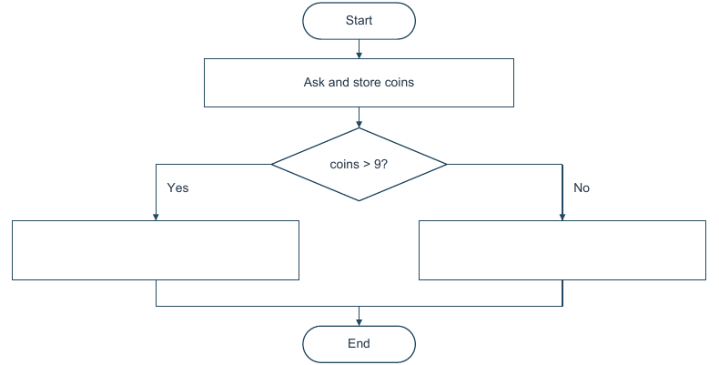
Choose a different whole number and predict before running the code.
Coins: __________ Expected: _______________________________
Actual: ___________________________________________________
BUILD THE GATE
Remember whether there is a key
A variable can store text as well as a number. Our key variable stores yes or no.
Keep your working gate. In Variables, choose Make a Variable. Name it key, choose For all sprites, and click OK. Tick key so you can see its value.
From Sensing, add a second ask ... and wait block. Place it directly below set coins to answer, before the if/else block. Type the new question shown below.
From Variables, add set ... to ... directly below the new question. Choose key from its menu. Drag a new light-blue answer block into its value input.
The top of your script now looks like this
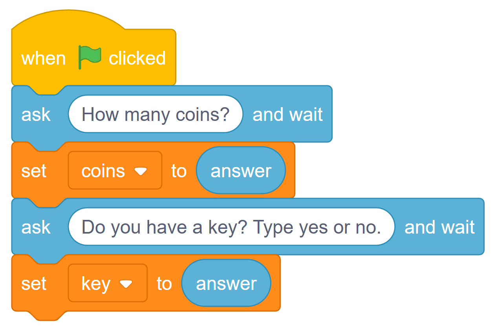
Keep your if/else block attached below this stack. We will change its condition on page 10. For now, it still checks the coins only.
Check the two stored answers
Click the flag. Enter 9, then enter yes for the key question. Look at the variable values on the Stage.
| Variable | Should show | What did yours show? |
|---|---|---|
| coins | 9 | |
| key | yes |
Important: answer holds the most recent reply. Store the coins reply before asking about the key. If coins shows yes, change the second set block to set key.
BUILD THE GATE
Require coins AND a key
AND combines two tests. Its result is true only when both tests are true.
Find the blocks: Operators (green): and, > and =. Variables (orange): coins and key.
Drag your coins comparison out of if. Keep it in the Code area; you will use it in the new test.
Make a second comparison with =. Put the orange oval key on the left. Type yes on the right.
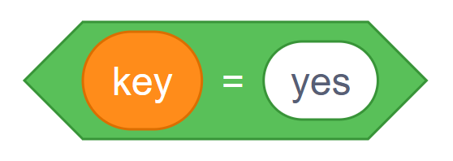
Drag out and from Operators. Put the coins comparison in the left hole and the key comparison in the right hole.
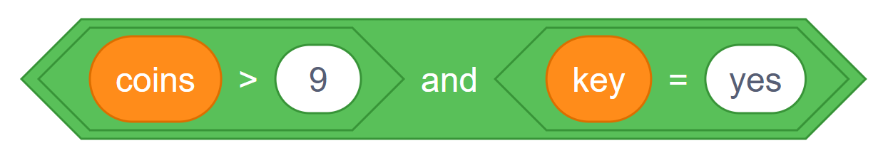
Put the whole combined green test into the empty hexagonal hole in if.
Keep Gate open! above else. Below else, change the message to You need 10 coins and a key.
Read your rule: There must be at least 10 coins AND the key answer must be yes. Check the complete script on the next page.
BUILD THE GATE
Check the complete AND gate
Compare your script with this picture. Start at the green-flag block.
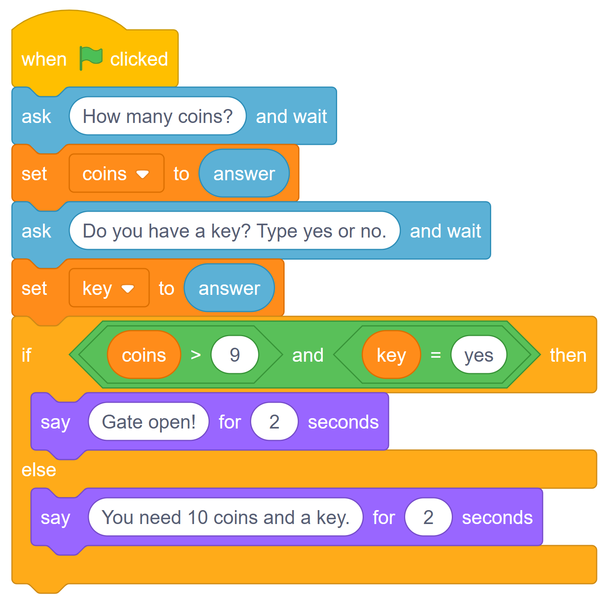
Test: Open means Gate open! Closed means the else message.
| Coins | Key | Expected | Actual |
|---|---|---|---|
| 9 | yes | Closed | |
| 10 | no | Closed | |
| 10 | yes | Open | |
| 11 | yes |
If a test fails: Check that the green block says and, the second set block says key, and both purple messages are inside if/else. Save your working project.
EXTENSION - OR
Try coins OR a VIP pass
OR means at least one test must be true. Save a copy before changing the rule.
Choose File > Save to your computer. Save a copy as Bonus_Gate.sb3. Keep your original coin-and-key file.
Make vip (For all sprites). Change the second question as shown. In the second set block, choose vip instead of key.
Replace and with or. Keep coins > 9 on the left. On the right use vip = yes, not key = yes. Change the else message to match the script.
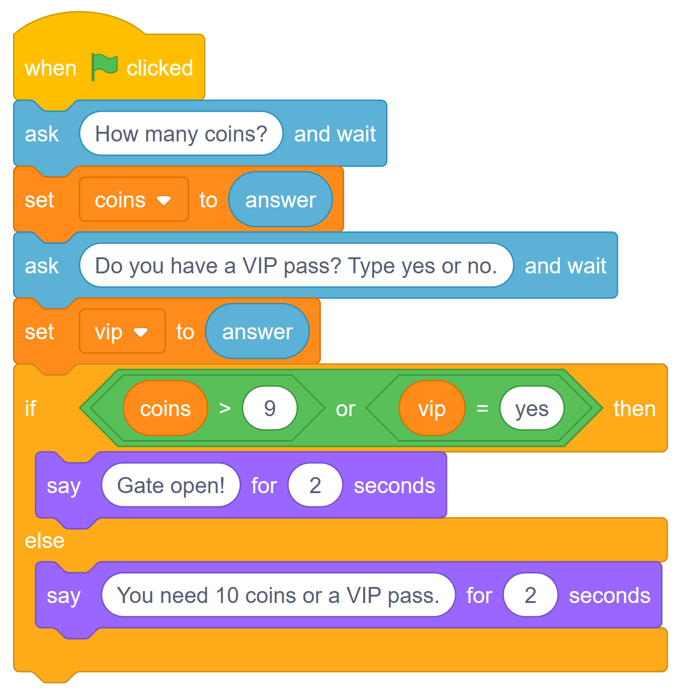
OR: One true condition is enough; both true also opens the gate. The old key variable is unused.
Predict Open or Closed, then test each row.
| Coins | VIP pass | Expected | Actual |
|---|---|---|---|
| 9 | no | Closed | |
| 9 | yes | ||
| 10 | no | ||
| 10 | yes |
OPTIONAL - NOT
NOT means the opposite
Paper task: predict the result. You do not need to change your Scratch gate.
A warning should sound when the temperature is above 30°C and the alert is not muted. Here, muted = yes means the sound is switched off.
Read the NOT block first
Find not in Operators (green). It reverses a true/false result.
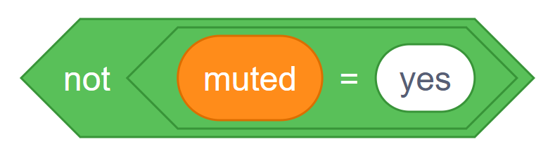
| muted | muted = yes | not (muted = yes) |
|---|---|---|
| yes | True | False |
| no | False | True |
Now read the whole condition
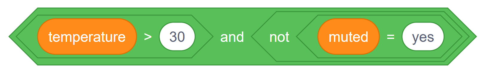
Read it as: temperature is above 30 AND the alert is NOT muted. Both tests must be true for the warning to sound.
Predict: does the warning sound?
| Temperature | Muted? | Warning: yes or no? |
|---|---|---|
| 30°C | no | |
| 31°C | no | |
| 31°C | yes |
Why does exactly 30°C not trigger the warning?
Write your answer in your notebook or on the printed guide.
OPTIONAL - ALGORITHMS
Search and sort
Paper task: use number cards or write the numbers.
Linear search: look from left to right
Find 4. Start with 7. Check one card at a time and stop as soon as you find 4. Count every card you check, including 4.
Number of comparisons: __________
Put the cards back in the same order. Search for 8. Keep checking until you find it or reach the end.
Number of comparisons: __________ Found or missing? ______________
Insertion sort: build a sorted group
Start with 7. Take the next card and insert it into the correct place in the sorted group. Use each card once.
| Next card | Sorted group after inserting it |
|---|---|
| Start | 7 |
| 2 | 2, 7 |
| 9 | 2, 7, 9 |
| 4 | |
| 1 | |
| 6 |
Explain
The original cards are not in numerical order. Why must you check every card before deciding that 8 is missing?
Write your answer in your notebook or on the printed guide.